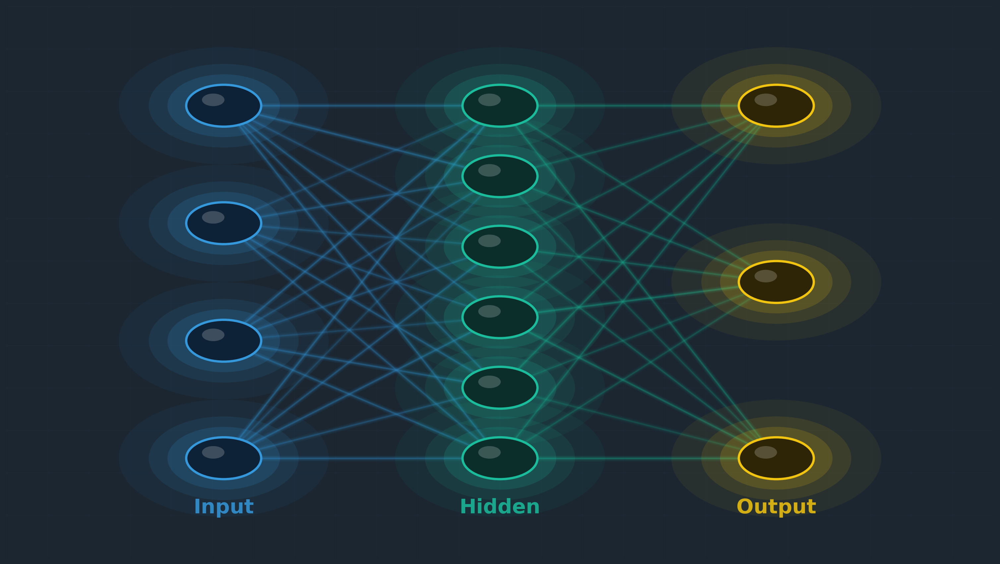
The Five Pillars
The Code of the Universe
From Classical Mathematics to Large Language Models
The Five Mathematical Ideas Inside Every AI You Use
LLM Token Processing Pipeline
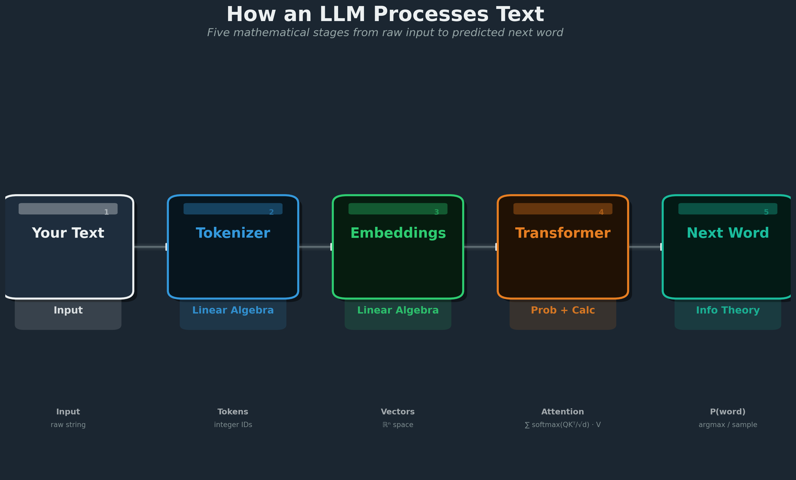
What Happens When You Ask ChatGPT a Question?
1. Your words become vectors, then giant matrices multiply — Linear Algebra
2. It computes probabilities for every possible next word — Probability
3. It learned from trillions of examples using derivatives — Calculus
4. The goal: minimize surprise (cross-entropy) — Information Theory
5. Optimizers like Adam make trillion-parameter training possible — Optimization
The Five Pillars of AI Mathematics
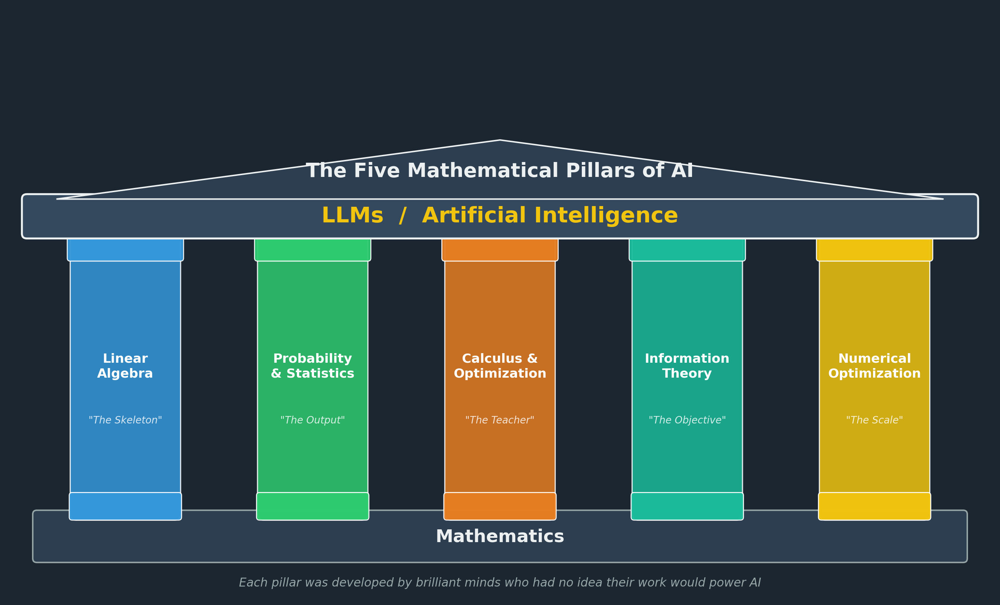
Mathematical Timeline: 100 BCE to 2024

The Five Pillars
Each pillar was developed by brilliant minds who had no idea their work would power AI.

PILLAR 1
Linear Algebra
The Skeleton of AI
P12000 Years of Linear Algebra
 Hermann Grassmann
Hermann Grassmann
~100 BCE
Chinese Fangcheng — solving systems with counting rods
Origin
1844
Grassmann publishes vector spaces — universally ignored
1858
Cayley invents matrix theory — while working as a lawyer
 Arthur Cayley
Arthur Cayley
Word Vectors: King − Man + Woman = Queen
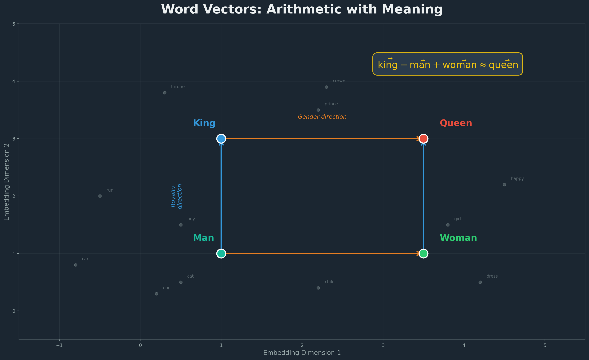
2D Word Embedding Space

P1Words as Vectors
AI Connection
$$\vec{\text{king}} - \vec{\text{man}} + \vec{\text{woman}} \approx \vec{\text{queen}}$$
Mikolov et al., 2013 — Word2Vec: meaning encoded as geometry.
Matrix Multiplication: The Core Operation

P1The Engine: Matrix Multiplication
$$\text{output} = W \cdot \vec{x} + \vec{b}$$
Every layer: multiply input vector by weight matrix
GPT-4: ~1.8 trillion such multiplications per token
Attention Weight Heatmap
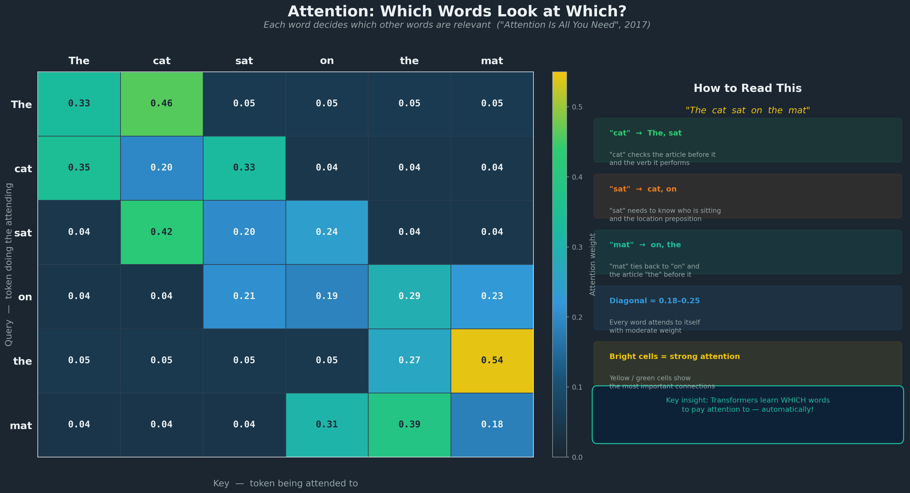
P1Attention = Three Matrix Multiplies
Breakthrough
$$Q = XW_Q, \quad K = XW_K, \quad V = XW_V$$
$$\text{Attention}(Q,K,V) = \text{softmax}\!\left(\frac{QK^T}{\sqrt{d_k}}\right)\!V$$
Three matrices. That’s all attention is. Cayley’s invention, applied to language.

PILLAR 2
Probability & Statistics
The Language of Uncertainty
P2Born from Gambling
1654
Pascal & Fermat exchange letters about a gambling problem
Origin
1763
Bayes’ theorem published posthumously
1933
Kolmogorov writes the axioms — probability becomes rigorous
 Blaise Pascal
Blaise Pascal
 Fermat
Fermat
 Bayes
Bayes
 Kolmogorov
Kolmogorov
Softmax: From Logits to Probabilities
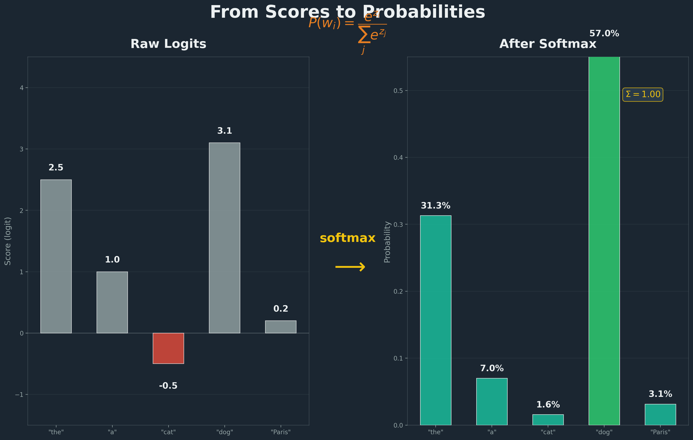
P2Turning Scores into Probabilities
$$P(w_i) = \frac{e^{z_i}}{\sum_j e^{z_j}}$$
50,000+ words. One probability each. Kolmogorov’s axioms in action.
 xkcd.com/1132 (CC BY-NC 2.5)
xkcd.com/1132 (CC BY-NC 2.5)
P2Randomness Creates Order
Individual events are random.
But the aggregate forms a pattern.
LLMs work the same way: each token is sampled randomly, but the sequence is coherent.
PILLAR 3
Calculus & Optimization
The Teacher
Gradient Descent on a Loss Surface

P3Gradient Descent: How AI Learns
 Cauchy (1847)
Cauchy (1847)
Cauchy invented this in 1847 — for tracking planetary orbits.
Backpropagation: Forward and Backward Pass
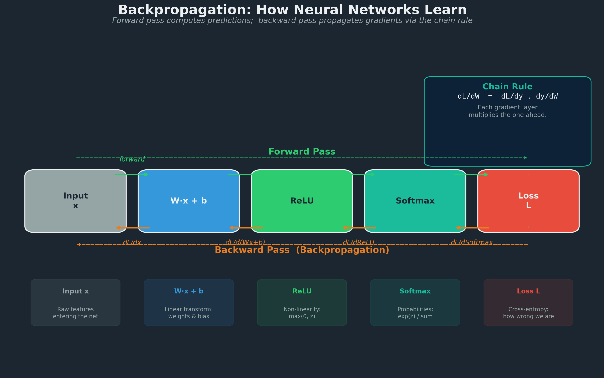
P3Backpropagation = The Chain Rule
Breakthrough
$$\frac{\partial L}{\partial w} = \frac{\partial L}{\partial y} \cdot \frac{\partial y}{\partial w}$$
 Hinton (Nobel 2024)
Hinton (Nobel 2024)
The chain rule: derivatives flow backward through every layer
1986: Rumelhart, Hinton & Williams publish in Nature
2024: Hinton wins the Nobel Prize in Physics
PILLAR 4
Information Theory
The Objective Function
P4Shannon: Father of Information Theory
Origin
“Information is the resolution of uncertainty.”
— Claude Shannon
1948: “A Mathematical Theory of Communication” — invented the bit
Fun fact: Shannon juggled while riding a unicycle through Bell Labs
 Claude Shannon
Claude Shannon
Cross-Entropy: Predicted vs True Distribution
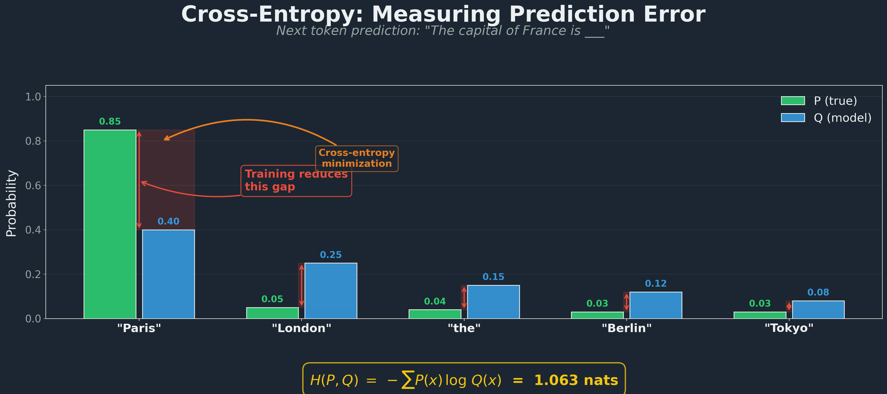
Training Loss Curve Over Time
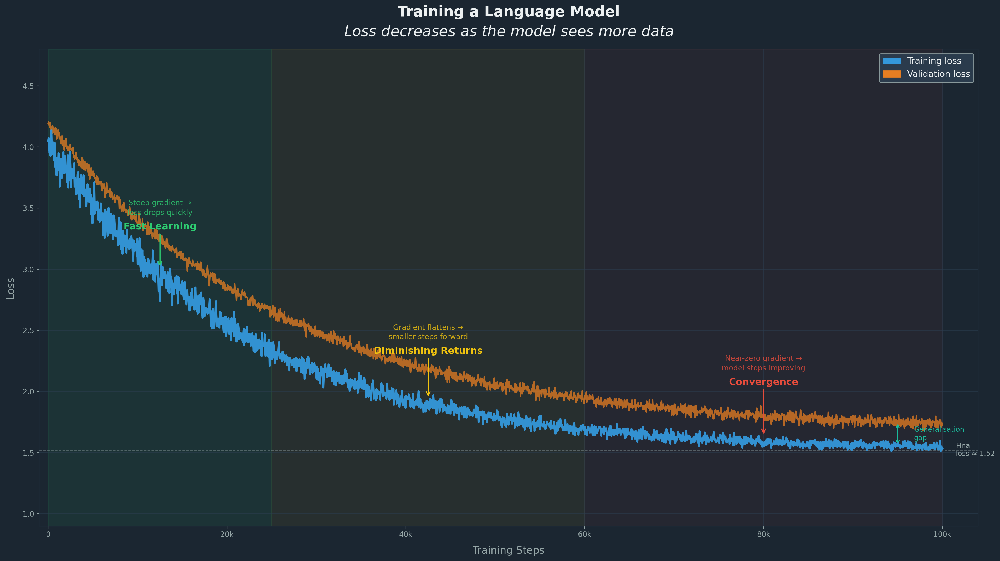
P4Cross-Entropy: The LLM Loss Function
AI Connection
$$H(P, Q) = -\sum_{x} P(x) \log Q(x)$$
Shannon’s 1948 formula IS the training objective of every LLM.
Training loss decreasing over time
Shannon's Communication Model as LLM Pipeline
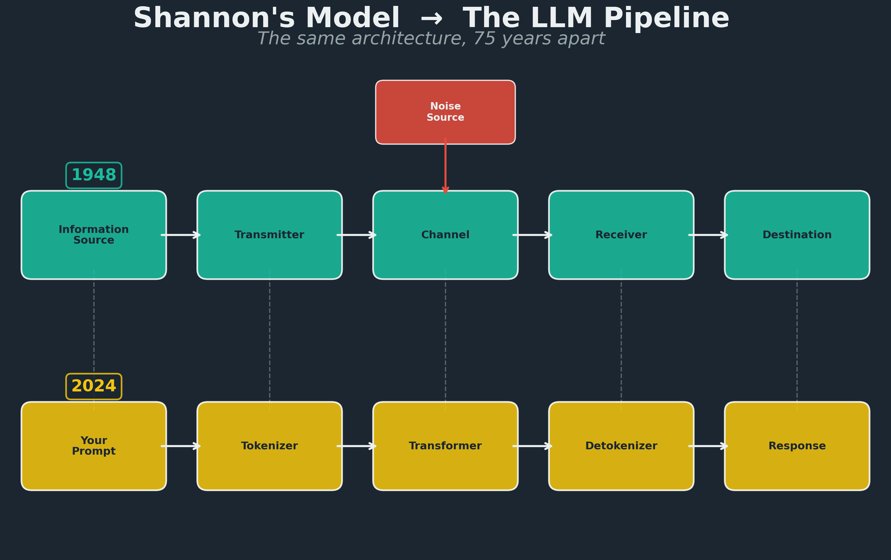
P4Shannon’s Model → The LLM Pipeline
Shannon designed this for telephone lines. 75 years later, it describes exactly how ChatGPT works.
PILLAR 5
Numerical Optimization
Training at Scale
SGD to Momentum to Adam

P5The Evolution of Optimizers
Discovery
1951: Robbins & Monro invent SGD
1964: Polyak adds momentum
2014: Kingma & Ba create Adam — 200,000+ citations
 xkcd.com/1838 (CC BY-NC 2.5)
xkcd.com/1838 (CC BY-NC 2.5)
Neural Scaling Laws (Kaplan et al., 2020)
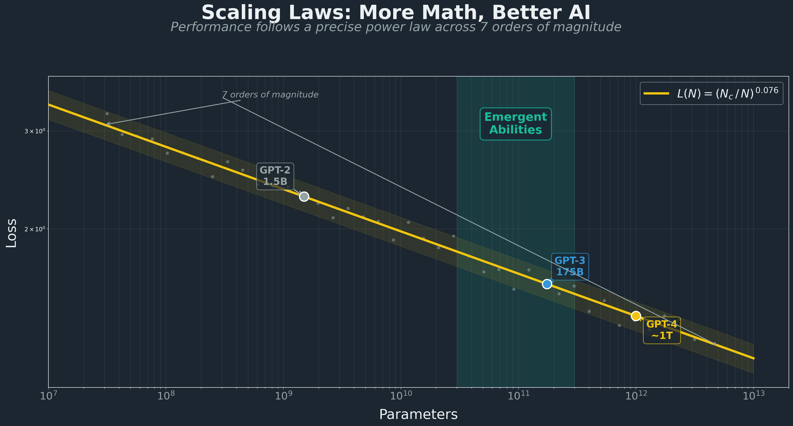
P5More Math, Better AI
AI Connection
$$L(N) = \left(\frac{N_c}{N}\right)^{0.076}$$
Kaplan et al., 2020 — why companies spend billions on bigger models.
 xkcd.com/2048 (CC BY-NC 2.5)
xkcd.com/2048 (CC BY-NC 2.5)
All Five Pillars in One Forward-Backward Pass

Where All Five Pillars Meet
Linear Algebra
Skeleton
Probability
Language
Calculus
Teacher
Info Theory
Objective
Optimization
Scale
Five branches of pure mathematics, developed over 2000 years,
all running simultaneously in a single forward-backward pass.
What LLMs Can Actually Do
Breakthrough
An AI won a Nobel Prize and a Math Olympiad gold medal. In back-to-back years.
35/42
IMO Gold Medal 2025
Gemini Deep Think — only 67 of 630 humans earned gold
Nobel
Chemistry 2024
AlphaFold solved 50-year protein folding problem
92%
HumanEval Coding
Claude on standard benchmark
These are not predictions. These already happened.
The Numbers Are Stupid Big
1.7T
Parameters in GPT-4
$100M+
Training cost
25,000 GPUs for 90 days
15T
Training tokens
= 2,750 Wikipedias = 84,000 years of reading
800M
Weekly ChatGPT users
1 in 10 humans on Earth (Oct 2025)
Plot twist: DeepSeek R1 matched GPT-4 performance for $6 million. Open source.
Brilliant and Broken
It solved an IMO problem but can’t count the letters in “strawberry.” Both true.
Strawberry: GPT can prove theorems but says there are 2 R’s in “strawberry”
9.11 vs 9.9: Many LLMs claim 9.11 > 9.9
Mata v. Avianca: Lawyer fined $5,000 for citing cases ChatGPT invented
Air Canada: Company ordered to honor a refund policy its chatbot hallucinated
Why? LLMs are statistical pattern completers, not fact databases. There is no internal fact-checker.
The Race — Zero to Gold in 8 Years
2017
“Attention Is All You Need” paper
Origin
2020
GPT-3 launches — 175 billion parameters
Nov 2022
ChatGPT: 100M users in 2 months (Instagram took 2.5 years)
Mar 2023
GPT-4 passes the bar exam
Breakthrough
2024
Two Nobel Prizes go to AI work (Physics + Chemistry)
Discovery
Jan 2025
DeepSeek R1 drops — Nvidia loses $600B in one day
Jul 2025
AI scores IMO gold medal (35/42)
AI Connection
What YOU Can Do Right Now
-
Get the GitHub Student Developer Pack
Free Copilot, free cloud credits, free everything
-
Take the Kaggle Intro to ML course
Free, hands-on, takes one weekend
-
Open Google Colab and run a notebook
Free GPU, no setup, works in your browser
-
Try a HuggingFace model
Thousands of pre-trained models, one line of code
-
Enter a Kaggle competition
Real data, real problems, real community
$186K
ML Engineer median salary
Free tools: ChatGPT, Claude, GitHub Copilot (free for students), Google Colab, Kaggle
The tools are free. The courses are free. What are you doing this weekend?
Five Pillars: Convergence Radar

The Code Is Still Being Written
- AI / ML Engineer
- Data Scientist
- Research Mathematician
- Quantitative Analyst
- AI Safety Researcher
“The mathematicians who built these tools never imagined AI.
The AI researchers who use them stand on 2000 years of shoulders.”
Thank you. Questions?